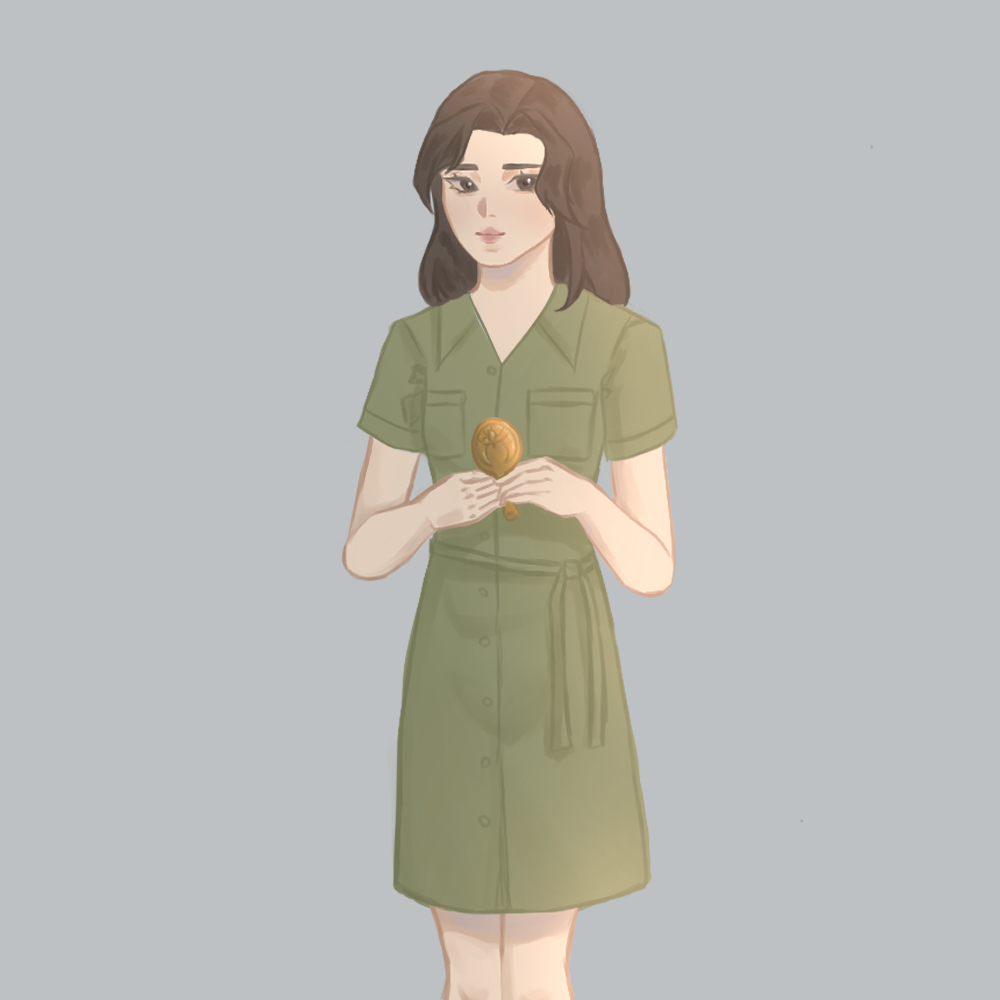

| Amy Fujiwara |
|---|
| Mythos: Amaterasu |
|  |
| Portrayed by | myork |
| Occupation | YA Novel Author |
| Born | Unknown (Age: 26) |
| Family |
|
| Relationships |
|
| Likes |
|
| Dislikes |
|
Check out Amy's books HERE
Description
Amy is an attractive young woman with shoulder-length black hair that glimmers in the sun, and dark brown eyes (described by Amy herself). She loves cute dresses, and one of her favorite outfits is a dark beige pleated skirt with a green sweater. Amy can be found frequenting local coffee shops to work on her novels, taking note of what’s going on around her as inspiration for her storylines and characters.
History
paragraph for character's history
Personality
Amy is a girl who's not like the other girls. She lives life like she is the main character, and the protagonists of her novels bear a strong resemblance to her in both appearance and personality. Amy is very straightforward when it comes to getting what she wants, as demonstrated when she boldly asked Lenny out on a date, as well as her confronting him in prison. She is also in tune with her emotions, as she wears her heart on her sleeve and openly yearns for her lover when he’s not by her side.
Relationships
Amy first encountered Lenny O'Connor in V for Vector. Amy has been enamoured with the green-clad man ever since. She noticed how rich he looked and charmed him into taking her out on a date. Lenny picked her up in his green Ferarri, and took her to a nice restaurant downtown. Amy then charmed him into giving her a large sum of money to "fix her car". In Lenny in Distress, Lenny ends up in holding with charges for robbery and manslaughter. He uses his only phone call to tell Amy to go to his apartment to get cash in order to pay his debts. Later, Amy visits Lenny in prison and makes a deal with him, telling him that she'll help break him out if he promises to not see other women. Lenny is convinced, and gives her a special gold coin as a calling card.
Abilities
Mastery over fire
As a rift of the sun goddess Amaterasu, Amy can control light and fire. She can summon balls of light to illuminate a dark space, or summon an intense flame hot enough to melt metal, as she was able to break the lock of a door in Lost in the Library.
Shape-shifting
Amy can shape-shift into a snow white fox. In fox form, Amy gains all the swiftness and enchanced senses of a fox, as well as retaining the ability to use human speech.
Hand Mirror
Amy carries a magical hand mirror that enhances her physical appearance. This mirror has been shown to transfer its effects to the holder, as she was able to improve Scott's appearance before his "date" with Lisa by giving him the mirror. However, she herself would return to her original appearance.
Quote from the character
-Character from Time
Trivia
- Amy is Japanese-American.
- Amy's favorite color is green.
- Amy likes to listen to cute songs with a romantic or cozy vibe. You can listen with her on Spotify here.
- Amy's books can be found at Greatreads.
Gallery